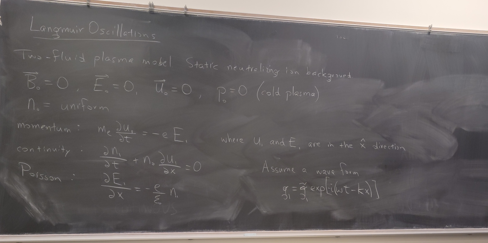

Investigating Plasma Waves and Turbulence in Space Plasma Using Langmuir Probes

Summary
- Investigating Plasma Waves and Turbulence in Space Plasma Using Langmuir Probes
Introduction and Background:
The project aims to investigate space plasma dynamics, focusing on plasma waves and turbulence using Langmuir probes. Understanding plasma dynamics is crucial for space weather monitoring and practical applications. Langmuir probes are essential diagnostic instruments that measure plasma parameters like electron temperature and density. Plasma waves and turbulence are fundamental components of space plasma dynamics, significantly influenced by solar winds.
Experimental Methods:
Langmuir probes play a vital role in measuring plasma waves and turbulence. The project involves deploying Langmuir probes on spacecraft exteriors and analyzing plasma dynamics. Techniques include voltage sweeping and continuous biasing for high-cadence measurements.
Results and Data Analysis:
Expected outcomes include advancements in fundamental plasma physics, comprehensive characterizations of space environments, and insights into space weather dynamics. The research aims to deepen understanding through observational data, theoretical modeling, and simulations. Langmuir probes provide critical data for characterizing plasma waves and turbulence in space.
Conclusion:
The project contributes to understanding plasma dynamics and space weather phenomena. Langmuir probes play a pivotal role in exploring space plasma. The systematic approach and comprehensive analysis promise to enhance knowledge of plasma physics and space weather prediction.
References:
The references include works by Adam Blake and MBA David Pace, providing insights into Langmuir probe instrumentation and analysis.